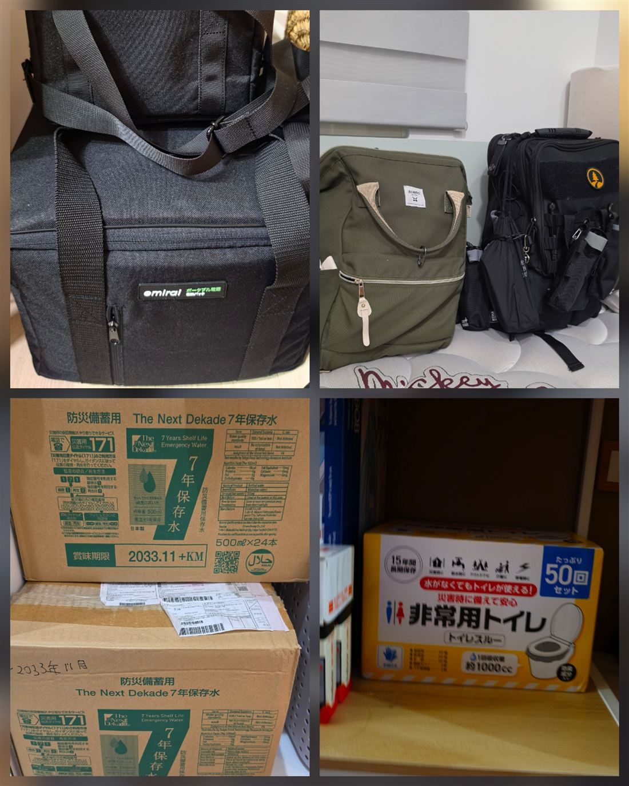
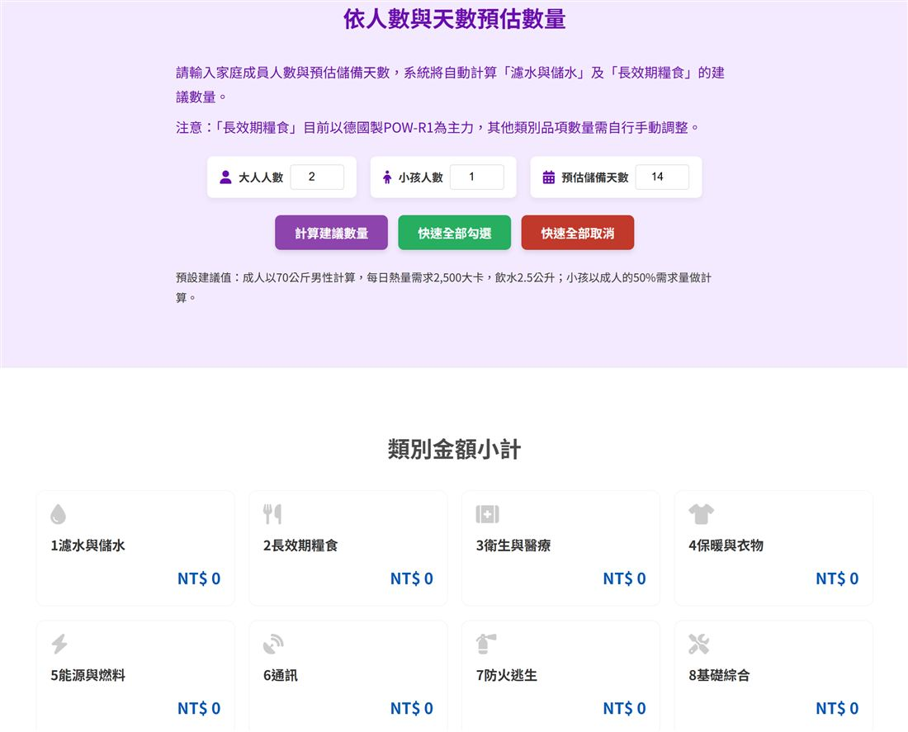

艙房A 生活隨筆 · 2026-10-31 22:59 UTC+8
當「 風險預防 」被解讀為「 偏激 」：兩種安全感模型，與我想留給自己小孩的韌性思維 🛡️
幾個月前，在家和太太清點防災物資與斷水電應急裝備時，四歲的孩子好奇湊過來一直問：
「 拔拔，你在做什麼？為什麼我們要準備這些？」
（他的觀察力跟表達方式，經常出乎我意料之外，都默默在注意我們說跟做什麼。）
我們家沒有習慣使用娃娃語溝通，都是盡量把他當成年人來互動與尊重，因此很坦承地回答：
「 兒子，我們生活在這個國家，除了地震與颱風這種常見的天災，也需要對周遭存在的極權國家與客觀地緣威脅保持警覺與準備。
爸爸準備這些，是為了在任何等級的意外來臨時，多一點保護媽咪跟你的底氣，而不需要去搶購物資或等待救援。」
這段再日常不過的家庭對話，孩子默默吸收了。平常在家，他就是那種不吃威脅、不接受大人用權威或兇的方式溝通的硬骨性格；之後在別的場合聽到相關的關鍵字時，也自己做出了反應跟對話，而且是我完全沒有教導或說過的內容。
身為父親，我是用覺得有趣的視角來觀察他，也覺得這大概一部分是來自DNA遺傳（小孩果然是親生的 😹）。
幾個月後，當我都快要忘記有過那些對話時，有人用很嚴厲跟指責的口氣想要提醒我：
孩子還小，不要灌輸他敵視的觀念！
（我：完全沒有，攤手。）
我只在自己的核心家庭準備與溝通，所以這個指責與回饋，徹底在我的意料之外，但也讓我以經營分析師的角度，歸納了「 獲取安全感 」的兩種模型。以下是我的解讀與推測，不是讀取他人心聲：
模型一、被動避險模型（Passive Avoidance）
在我的理解裡，有些人在過去不安的環境中，發展出一套策略：
降低能見度、不輕易表態、少談風險，換取局部的安穩。我的推測是，在這個框架下，主動提起風險容易被視為「 自找麻煩 」或「 太激進 」。
模型二、主動防禦模型（Active Resilience）
我自己的思考是：忽視風險，不會降低風險發生的機率，缺乏情勢感知的能力，反而讓系統在衝擊來臨時毫無承受力。
這個道理適用於所有層面與事物，小從個人與家庭，大至企業與國家皆然。
作為丈夫與父親，我的責任不是嘗試討好所有人的感受，也不是替孩子打造脫離現實的溫室，而是讓他學會辨識環境中的真實邊界與風險來源：
- 面對霸凌，單純退讓換不來尊重。
- 面對壓迫與威脅，假裝無害也換不到真正的安全。
我選擇教他「 對惡意保持警覺、有守護自己的骨氣 」。
這不是灌輸對立，而是品格與自我保護能力的基本訓練。
同時，大人之間的立場討論，我也盡量做到不在孩子耳邊，因為他的記性、語意解讀、重組推論的能力，都比我以為的還好很多。
兩種「 風險應對模型 」模型之間的落差，我不打算靠爭辯去縮小。比較有效率的做法是：
清楚劃定自己家庭的邊界，尊重別人各自形成的風險管理習慣，不耗力氣去改變誰，同時把自己家庭該守護的守好。每個人，才是自己家庭的最高管理員（admin)。
多數人都是好人，但世界不全是溫柔與善意。
有判斷力，並在能力範圍內培養應對的能力，是我能給太太和孩子最扎實的安全感。

圖片說明：
畫面中僅是一小部分物資。關於防災，依照類別，大致可分類為心態建立、水、食物、醫療急救、清潔衛生用品、簡易通訊工具、衣物與保暖、能源。

讀完有什麼想說的？不用真名也可以。📡 傳訊給我 →